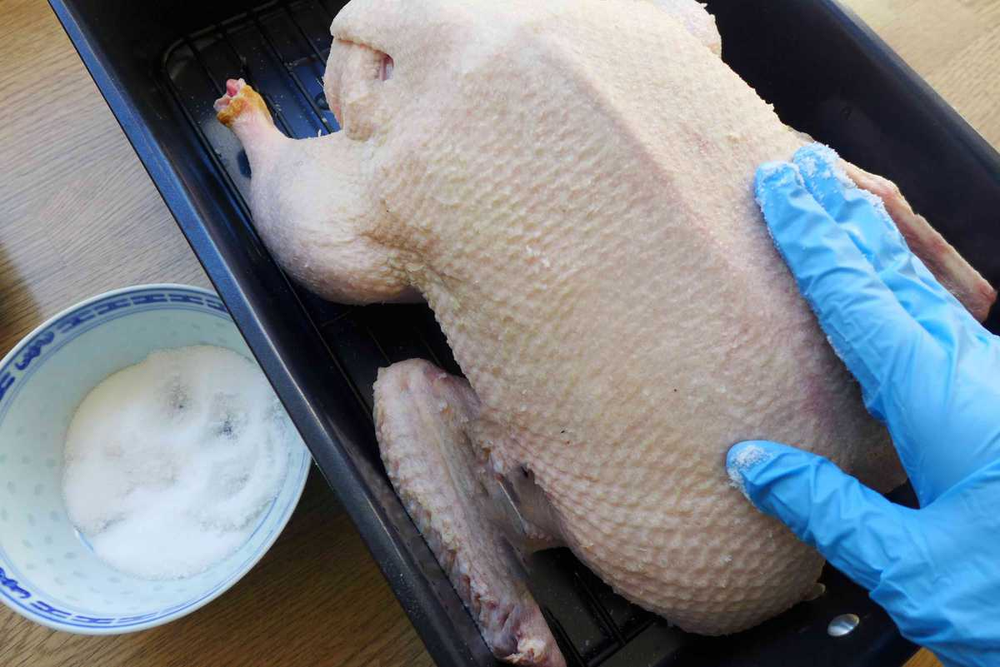
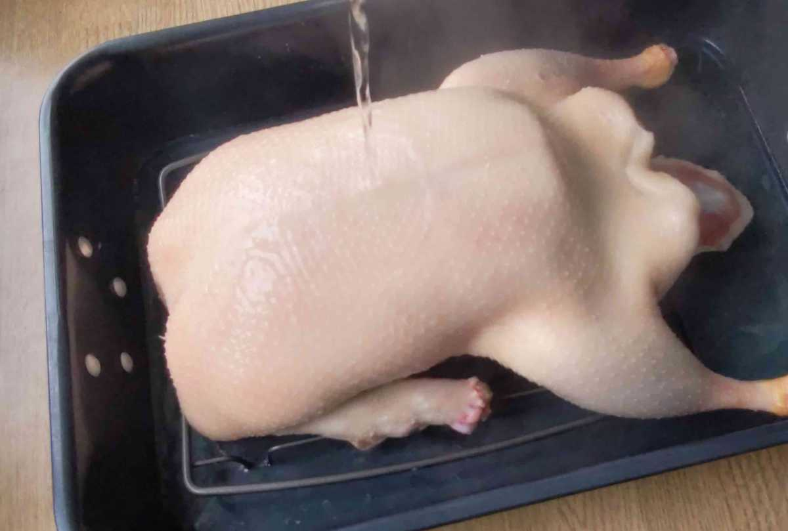
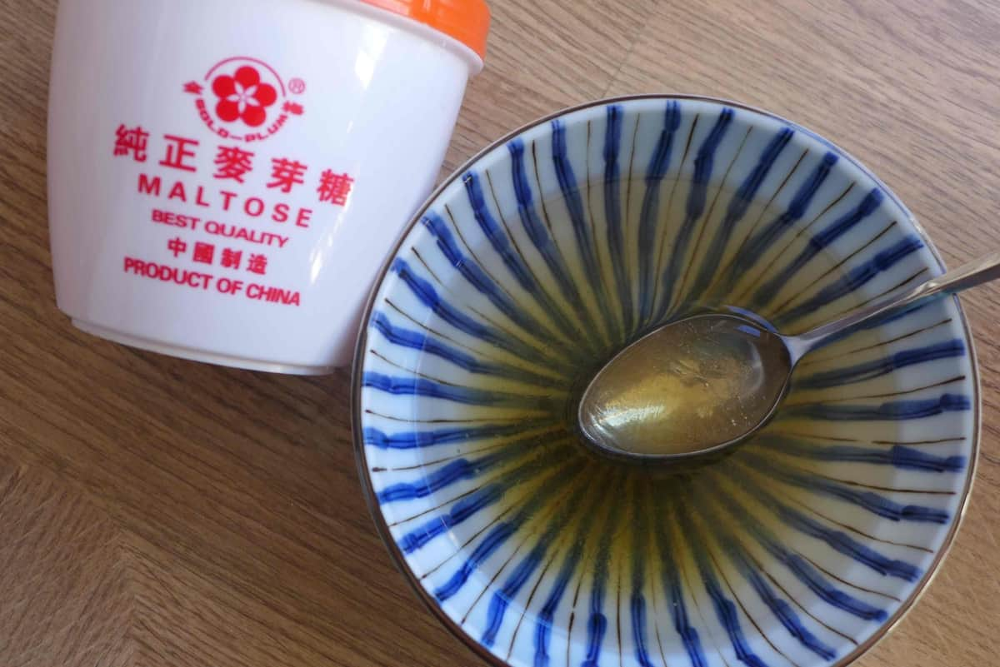
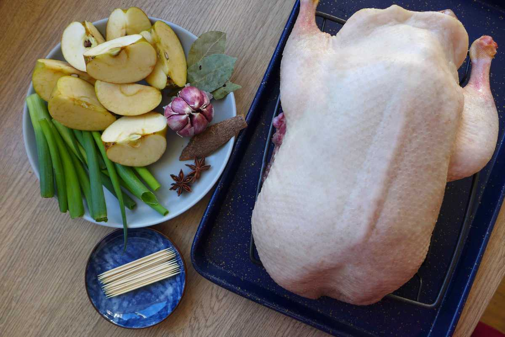
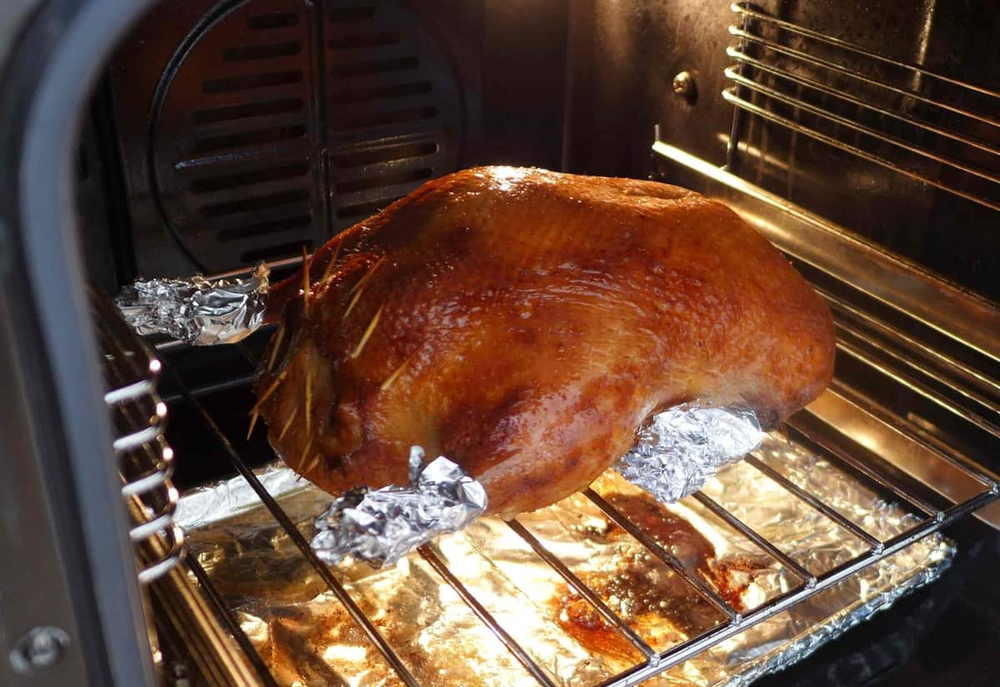
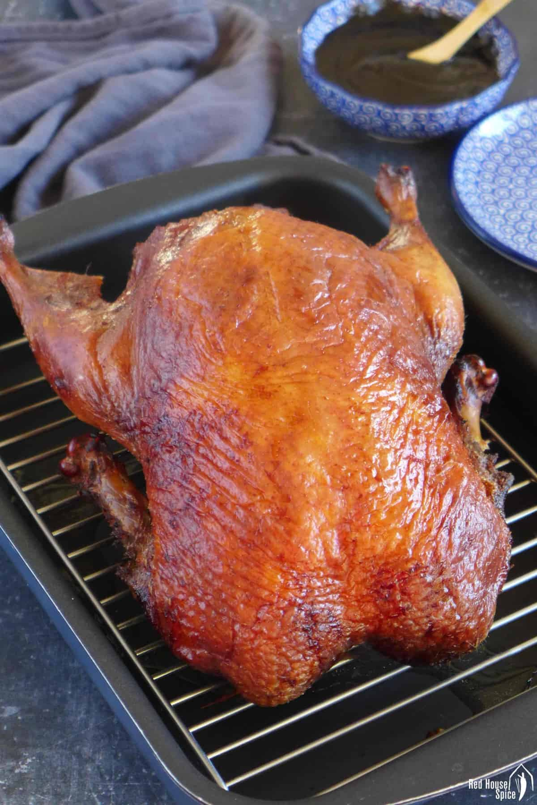

Pecking Duck
Peking duck (北京烤鸭 Běijīng kǎoyā) is a famous dish from Beijing, enjoying world fame, and considered as one of China national dishes. Peking duck is savored for its thin and crispy skin.
Peking duck is a dish from Beijing (Peking)[a] that has been prepared since the Imperial era. The meat is characterized by its thin, crispy skin, with authentic versions of the dish serving mostly the skin and little meat, sliced in front of the diners by the cook. Ducks bred especially for the dish are slaughtered after 65 days and seasoned before being roasted in a closed or hung oven. The meat is often eaten with spring onion, cucumber and sweet bean sauce with pancakes rolled around the fillings. Sometimes pickled radish is also inside. Crispy aromatic duck is a similar dish to Peking duck and is popular in the United Kingdom.

| Ingredients | |
|---|---|
| - | 2 tablespoon fine salt |
| - | 2 tablespoon maltose |
| - | 120 ml hot water |
| - | 1 teaspoon vinegar |
| - | 2 stalks scallions |
| - | 1 head garlic |
| - | 2 apples |
| - | 4 star anise |
| - | 4 bay leaves |
| - | 2 pieces cassia cinnamon |
| For the sauce | |
|---|---|
| - | 3 tablespoon sweet bean sauce |
| - | 1 teaspoon sugar |
| Steps to Make It | |
|---|---|
| 1 | Pat dry the duck with kitchen paper to remove any moisture then rub a good layer of fine salt all over (including the cavity). Leave it to rest for about 1 hour over a wire rack inside a tray.
 |
| 2 | The traditional method involves basting: hold the duck over a pot of boiling water then use a ladle to pour water over the duck. I would like to introduce an alternative, simpler way: Boil some water in the kettle then gently pour it over the entire duck skin (remember to flip over and do the other side). You can use a deep tray to collect the water, or do it inside a sink.
 |
| 3 | Coat then skin with syrup, the key ingredient used in this step is maltose (Mai Ya Tang/麦芽糖), a type of syrup with dense, super sticky consistency that is commonly used in Chinese cuisine. It has a milder sweetness than sugar or honey but gives food a much glossier look. You should be able to find it in most of the Chinese/Asian shops.
 |
| 4 | Air teh duck, this process reduces the moisture in the skin thus helping to crisp up while roasting. Put the duck (over a rack and inside a tray) in the fridge without any cover. Keep it there for 24 to 48 hours. You can shorten the process by blowing cool air at the duck with a fan if available.
|
5 | Stuff the cavity of the duck with the following ingredients: apples, scallions, garlic, star anise, cassia cinnamon and bay leaves. This serves two purposes: To make the cooked meat juicier, and more flavourful too. To prevent the stuffing from falling out, seal the openings of the duck with toothpicks or skewers.
 | 6 | Roast in two stages, for best results, I recommend you use a fan-assisted oven, aka convection oven. Preheat it at 200°C/390°F. If using a conventional oven, increase the temperature to 220°C/425°F.
 Place the duck, the breast side facing up, on the middle rack of the oven. This allows the heat to travel in all directions and ensure an even browning. Remember to put a large tray at the bottom of the oven to collect any dripping fat while cooking. Leave to roast for 15 minutes. In the second stage of roasting, reduce the oven temperature to 180°C/350°F (or 200°C/390°F if using a conventional oven). To prevent burning, cover the tip of the wings and the end of the legs with aluminium foil. Continue cooking for another 60 minutes or so.  |